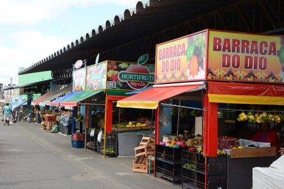
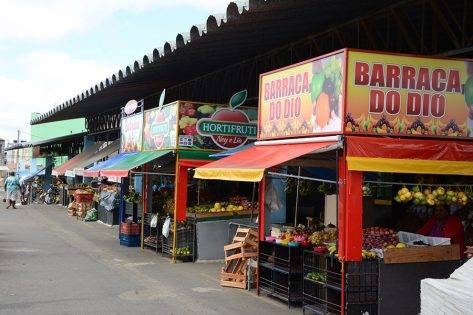

Introdução
A conexão entre o campo e a cidade é essencial para o desenvolvimento sustentável. O campo fornece alimentos, matérias-primas e paisagens naturais, enquanto a cidade oferece tecnologia, serviços e oportunidades de mercado. Essa relação precisa ser equilibrada e valorizada para garantir qualidade de vida para todos.
Importância da Conexão
O intercâmbio entre campo e cidade promove o desenvolvimento econômico, a segurança alimentar e o bem-estar social. O transporte de produtos agrícolas, a valorização da cultura rural e o turismo ecológico são exemplos de como essa conexão beneficia ambas as regiões.
Desafios Atuais
Entre os principais desafios estão a urbanização desordenada, a degradação ambiental e a desigualdade de acesso a recursos. É necessário planejamento urbano e políticas públicas que integrem as realidades rural e urbana.
Iniciativas de Integração
Feiras de produtores, hortas urbanas, programas de agricultura familiar e incentivos ao turismo rural são algumas das ações que fortalecem a relação entre campo e cidade.
Galeria de Imagens
 
